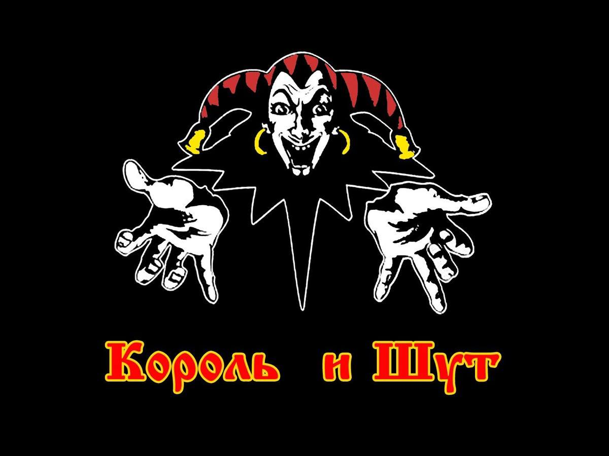

Дискография группы "Король и Шут"
Король и Шут — группа, чья дискография является важнейшей частью истории русского рок-движения. С момента своего образования в 1988 году группа выпустила более 10 студийных альбомов, которые оказали огромное влияние на развитие отечественной рок-музыки.
Дискография группы "Король и Шут"
| Год | Альбом | Жанр | Популярные песни | Описание |
|---|---|---|---|---|
| 1995 | Король и Шут | Панк-рок, Оккультный рок | "Кукла колдуна", "Лесник" | Дебютный альбом, в котором группа утвердила свой уникальный стиль с мистическими текстами и панковскими ритмами. |
| 2000 | Шарики | Панк-рок, Хардкор | "Шарики", "Зловещий Клоун" | Альбом, который сделал группу культовой в российском роке. В нем сочетаются панковская агрессия с элементами театральности. |
| 2003 | Погоня | Панк-рок, Готика | "Погоня", "Судьба" | Группа продолжает развивать свою уникальную тему с мрачными текстами и театрализованным подходом к музыке. |
| 2005 | На крыльях смерти | Панк-рок, Мистический рок | "На крыльях смерти", "Палата №6" | Этот альбом стал знаковым для группы. В нем присутствуют более зрелые музыкальные и текстовые решения. |
| 2008 | Кто, если не мы? | Панк-рок, Альтернатива | "Кто, если не мы?", "Палата №6" | Альбом, в котором группа экспериментирует с более разнообразными музыкальными стилями и лирикой. |
| 2010 | Как в старой сказке | Панк-рок, Фолк | "Как в старой сказке", "Герой" | Смешение фолка и панка, с множеством сюрреалистичных и фэнтезийных текстов. |
Интересные факты о дискографии
- Группа выпустила более 10 студийных альбомов, которые разошлись тиражом более 5 миллионов копий.
- Их альбомы в основном стали платиновыми или золотыми в России.
- Многие из песен группы были использованы в фильмах, сериалах и рекламных роликах, что свидетельствует о культовости их музыки.
- Их альбомы отличались не только музыкой, но и уникальной визуальной эстетикой, которая часто включала готические, мистические и фэнтезийные элементы.
Последние альбомы и их влияние
После смерти Михаила Горшенёва (Горшка) группа продолжила выпускать новые альбомы, которые пользовались большим интересом среди фанатов. Однако, смерть основного автора песен оставила незаполненную дыру, и группа продолжала существовать как трибьют и культовый феномен.
